Publications
Selected work from REAL Lab, listed by year. For the complete list, see Google Scholar.
2026
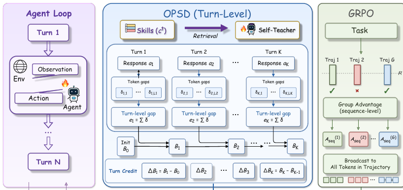
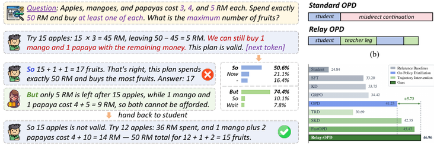
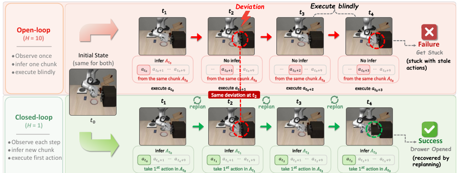
VLA-Corrector: Lightweight Detect-and-Correct Inference for Adaptive Action Horizon
arXiv preprint, 2026 NEW
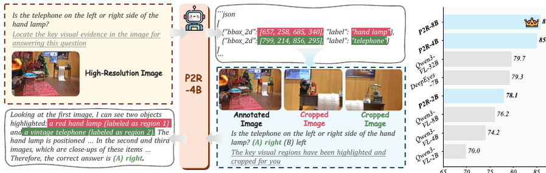
Phun-Bench: Evaluating LLMs on Phonological Understanding in Chinese
ACL 2026 NEW
AutoTaskEval: Towards Domain-Specific and Fine-Grained Evaluation for LLMs
ACL 2026 NEW
Leveraging Outline-Optimized Generative Interactions and Critique for Self-Refining Outlines with Reinforcement Learning
ACL 2026 NEW
Experience-Driven Multi-Turn Reinforcement Learning for GUI Agents
ACL 2026 NEW
ToM-Synth: Scaling Robust Theory of Mind in LLMs via 6,912 Structured Social Units
ACL 2026 (Findings) NEW
MAESTRO: Large Language Model-Enabled Cross-Agency Coordination for Natural Disaster Early Warning
npj Artificial Intelligence, 2026 NEW
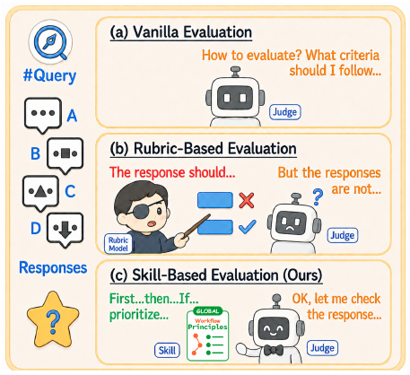
Beyond Rubrics: Exploration-Guided Evaluation Skills for Reward Modeling
arXiv preprint, 2026 NEW

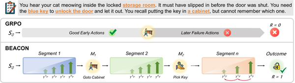
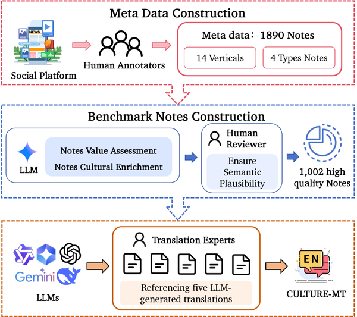
Beyond Literal Translation: Evaluating Cultural Effectiveness in Social Media UGC
ICML 2026 NEW
Context-Aware Reasoner: Enhancing Contextual Reasoning in Multimodal Large Language Models
ICML 2026 NEW


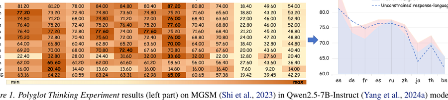

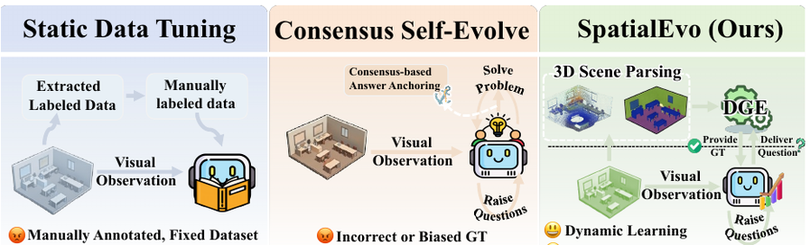
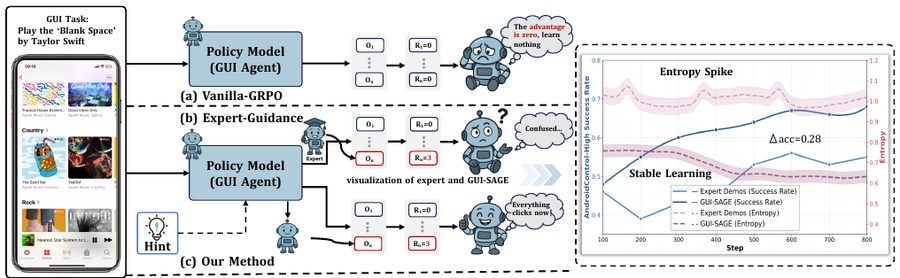


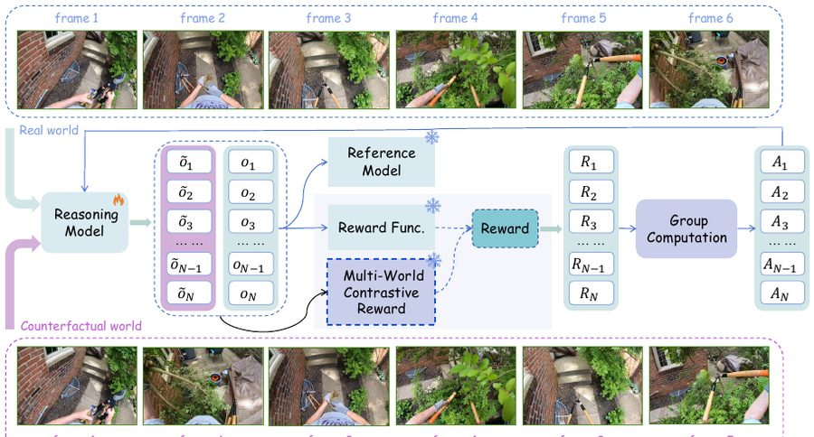
Reality vs Counterfactual: Multi-World Contrastive Reinforcement Learning for Enhancing MLLM's Theory of Mind in Egocentric Videos
AAAI 2026 ORAL

How Controllable Are Large Language Models? A Unified Evaluation across Behavioral Granularities
ACL 2026
Label-Free GUI Grounding via Confidence-Guided Negative Reinforcement Learning
2026
2025


Active Confusion Expression in Large Language Models: Leveraging World Models toward Better Social Reasoning
arXiv preprint, 2025


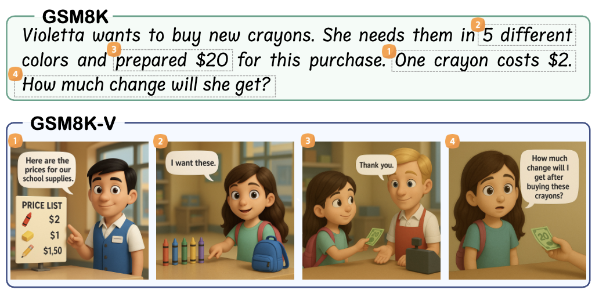


Cooper: Co-Optimizing Policy and Reward Models in Reinforcement Learning for Large Language Models
arXiv preprint, 2025
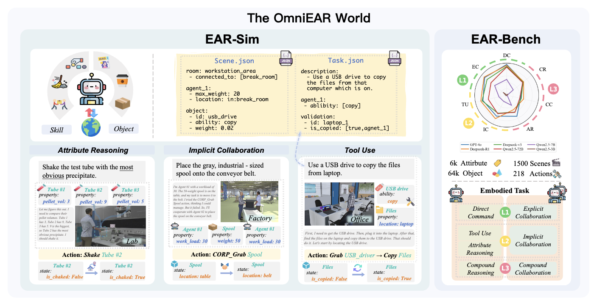


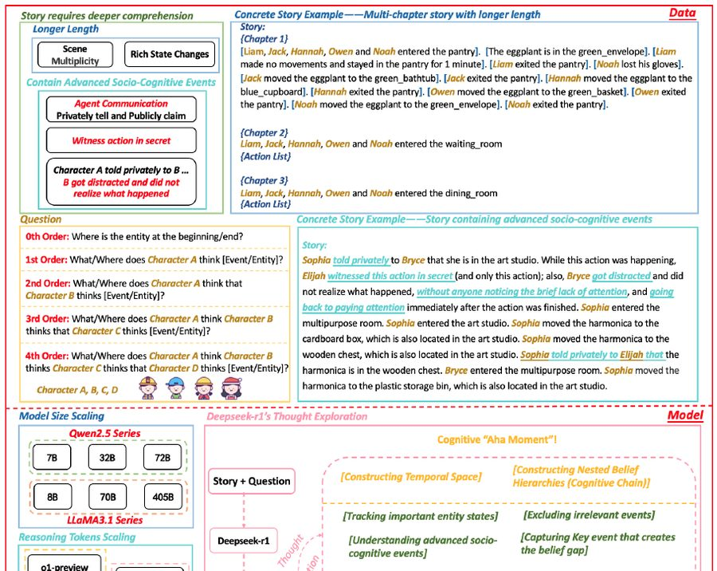
Scaling LLMs' Social Reasoning: Sprinkle Cognitive "Aha Moment" into Fundamental Long-Thought Logical Capabilities
ACL 2025 (Findings)

TimeHC-RL: Temporal-Aware Hierarchical Cognitive Reinforcement Learning for Enhancing LLMs' Social Intelligence
arXiv preprint, 2025


Think Twice, Click Once: Enhancing GUI Grounding via Fast and Slow Systems
arXiv preprint, 2025
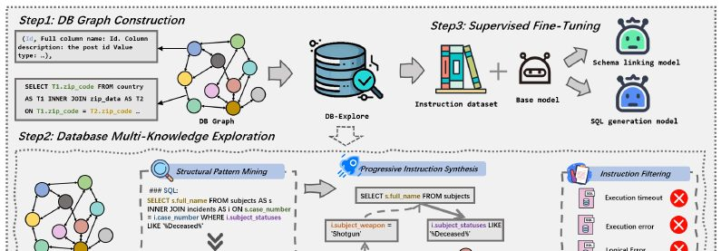
DB-Explore: Automated Database Exploration and Instruction Synthesis for Text-to-SQL
EMNLP 2025 (Findings)
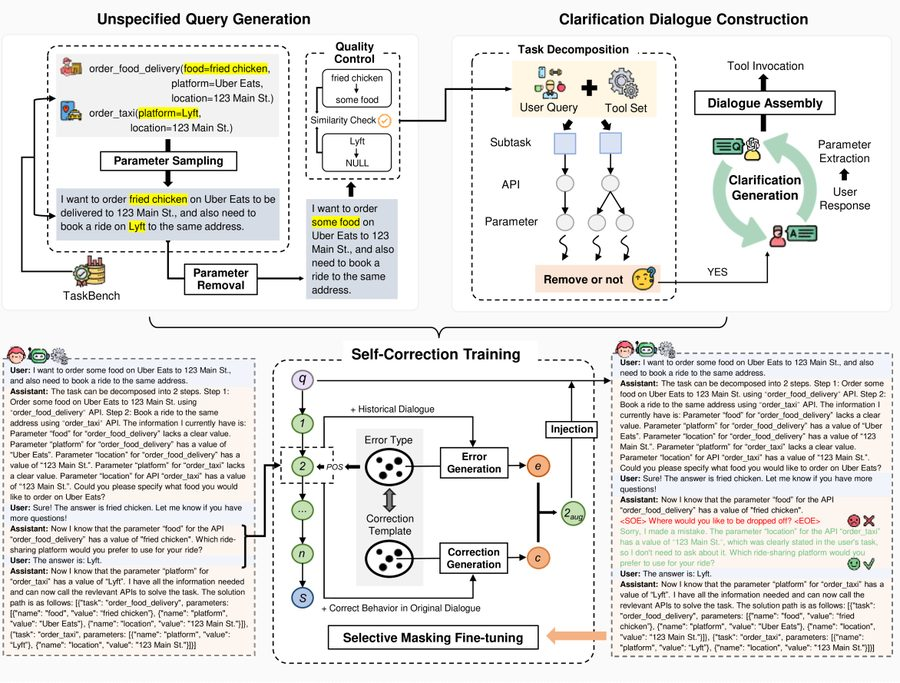

MathFimer: Enhancing Mathematical Reasoning by Expanding Reasoning Steps through Fill-in-the-Middle Task
ICLR 2026

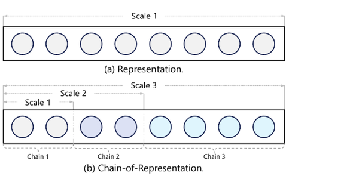
2024

MAKIMA: Tuning-Free Multi-Attribute Open-Domain Video Editing via Mask-Guided Attention Modulation
arXiv preprint, 2024

GaVaMoE: Gaussian-Variational Gated Mixture of Experts for Explainable Recommendation
arXiv preprint, 2024
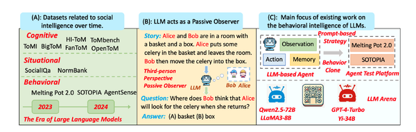
EgoSocialArena: Benchmarking the Social Intelligence of Large Language Models from a First-Person Perspective
arXiv preprint, 2024
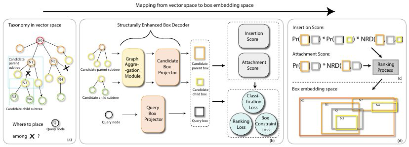
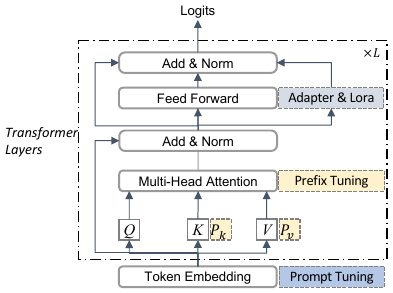
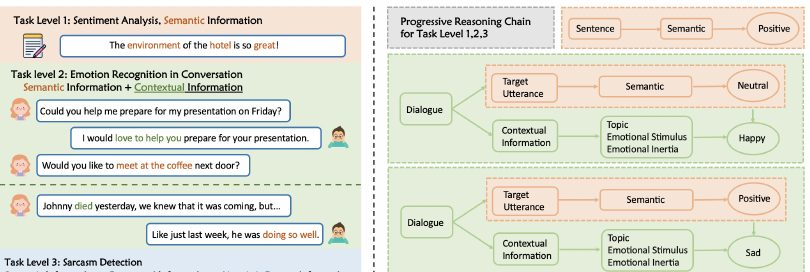
Progressive Tuning: Towards Generic Sentiment Abilities for Large Language Models
ACL 2024 (Findings)

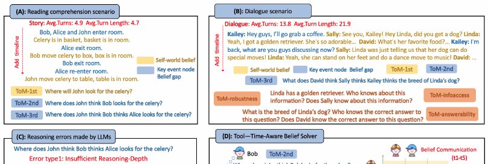

Advancing Process Verification for Large Language Models via Tree-Based Preference Learning
EMNLP 2024
Specialized Mathematical Solving by a Step-By-Step Expression Chain Generation
IEEE/ACM Trans. Audio, Speech, Lang. Process. 32 (2024)

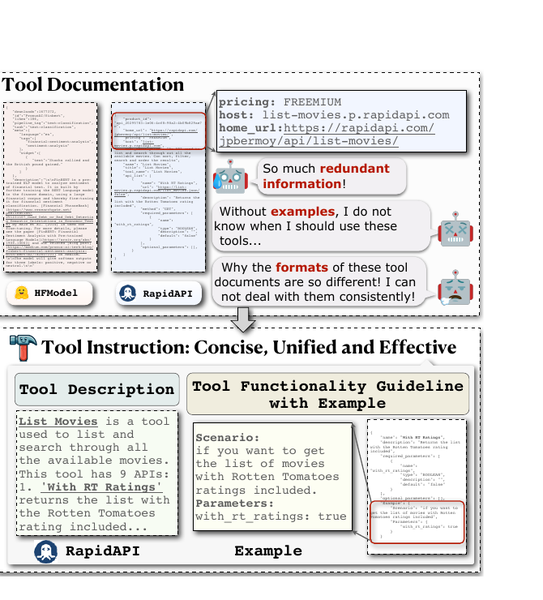


2023 and earlier · selected


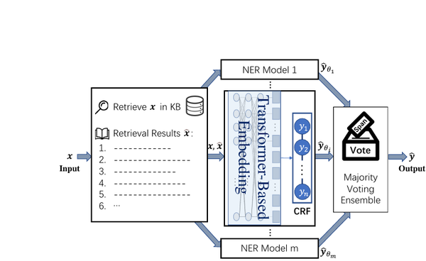
DAMO-NLP at SemEval-2022 Task 11: A Knowledge-Based System for Multilingual Named Entity Recognition
SemEval 2022 BEST SYSTEM


For the full list, see Google Scholar.